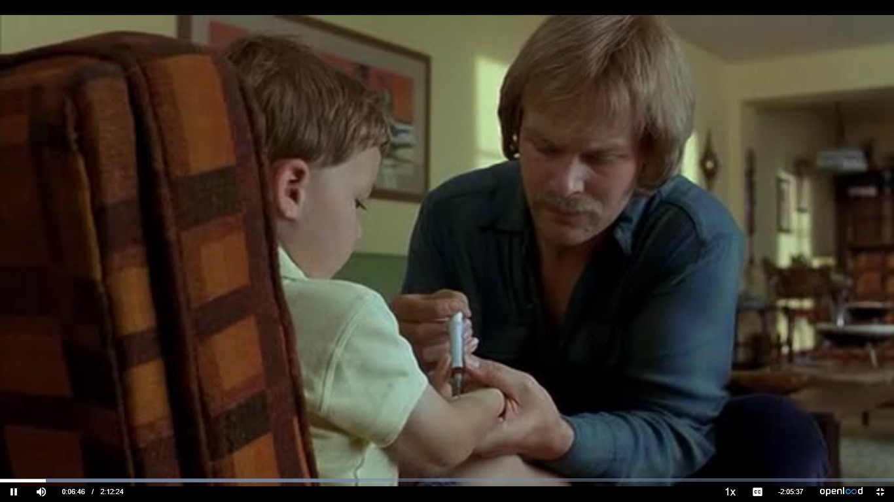
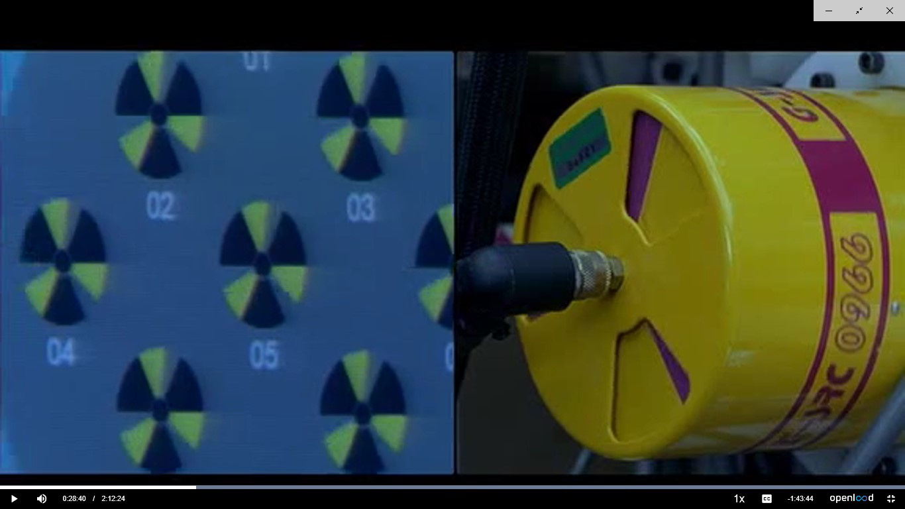
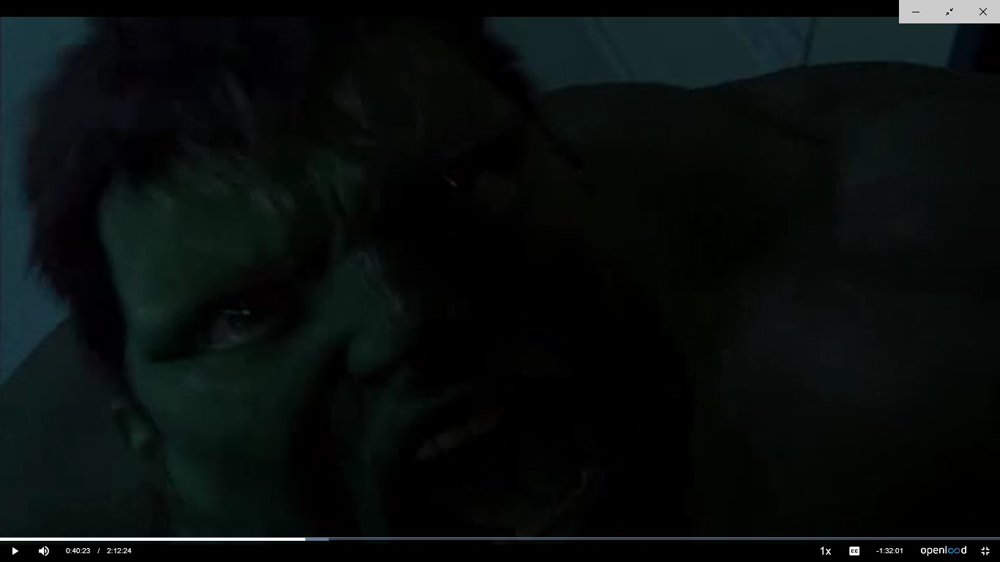
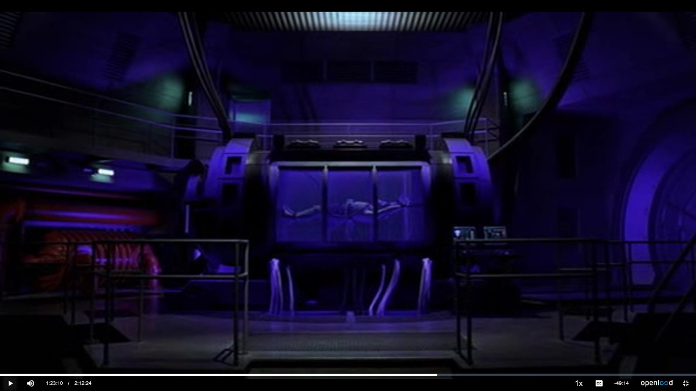

Sinopsis
Bruce Banner, un brillante científico que se dedica al campo de la tecnología genética tiene un duro pasado que le va a condicionar toda su vida. Su antigua novia, Betty Ross, que también es su compañera de trabajo, pierde la paciencia intentando que este recupere su estabilidad emocional, fue testigo de un grave accidente que sucede en el laboratorio y en el que Banner sufrió una fuerte exposición a rayos gamma; desde ese accidente este comienza a sufrir lo que el cree que son extrañas pesadillas. Mientras sucede todo esto aparece esporádicamente una criatura salvaje e invencible, Hulk, que cada vez que aparece deja tras el un escenario de destrucción total, creando una situación tan grave que es necesaria la intervención del ejército, encabezado por el general Thunderbolt Ross, el padre de Betty. Esta sabe que Bruce es ese monstruo e intenta impedir su caza por todos los medios.
Necesidades
La película se centra en la creación de algún antídoto capaz de crear hombres capaces de luchar contra todo, con una fuerza extraordinaria, regeneración instantánea de sus heridas, capacidad de volar,… un superhombre en toda regla.
Dispositivo (Interfaz/tecnología):
Antídoto
Primera Aparición:
0:06:46
Necesidad:
Al poner a una persona que ha recibido este antídoto en contacto con la radiación gamma lo convierte en un superhombre.
Dispositivo (Interfaz/tecnología):
Maquina de rayos gamma
Primera Aparición:
0:28:40
Necesidad:
Es la encargada de proporcionar la radiación al superhombre que anteriormente había recibido la inyección del antídoto.
Dispositivo (Interfaz/tecnología):
Hulk
Primera Aparición:
0:40:23
Necesidad:
Superhombre indestructible en el que se transforma un hombre normal cuando este se enfada, este superhombre es invencible, es sometido a disparos de tanques, misiles, etc.. y no hay nada que acabe con él.
Dispositivo (Interfaz/tecnología):
Estimulador ondas cerebrales
Primera Aparición:
1:23:10
Necesidad:
Lo utilizan para mantener en acción el cerebro del superhombre para intentar sacar información respect a su and e intentar copier la formula del antídoto para convertirse en superhombre.
Tecnologías involucradas
En la película vemos una mezcla de inventos que sí que se existían pero no para el fin que se da en la película con inventos que ni si quiera aun existen.
Tecnologías disponibles en el momento de la producción
En el momento de la producción, la maquina de rayos gamma si que existía pero no para un uso que da superpoderes a una persona si no para el uso medico, el estimulador de ondas cerebrales Tambien existía pero no exactamente como aparece e la película, si no pequeños dispositivos que servian para estimular el cerebro.
Tecnologías imaginadas en el momento de la producción
El antídoto y la idea de superhombre, eran imaginadas en el momento de la producción y lo siguen siendo a día de hoy, ya que aun no se ha inventado nada que sea capaz de tranformar a un hombre y convertirlo en una bestia invencible.
Impacto
En personas se ha tratado algo, sobre todo en el mundo del fisicoculturismo en el que las personas a través de inyecciones y suplementos consiguen una sobredimensión de sus músculos que de forma natural no conseguirían, pero por ejemplo la fuerte exposición a rayos gamma hoy día acabaría con la vida con cualquier persona y conseguir un superhombre del nivel de Hulk es algo que de momento veo impensable.
Referencias
- Filmaffinity, Hulk, https://www.filmaffinity.com/es/film647706.html, (última visita: 22 marzo de 2018)
- Pelisgratis, Hulk 2003, https://pelisgratis.online/ciencia-ficcion/hulk-2003/ , (última visita: 6 marzo de 2018)